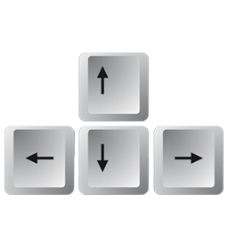

COMO JOGAR:
A JOGABILIDADE É BEM SIMPLES, O PERSONAGEM MOVIMENTA-SE SEMPRE PARA FRENTE E EM LINHA RETA E CABE AO JOGADOR,
DESVIAR DOS OBSTÁCULOS, PULANDO SOBRE ELES OU ANDANDO PARA O LADO.
PARA INICIAR O JOGO, O JOGADOR DEVE ESCOLHER ENTRE UM DOS PERSONAGENS ATUALMENTE LIBERADOS, DEPOIS DE SELECIONADO,
O JOGO INICIA-SE AUTOMATICAMENTE.
TECLAS:

SETA ESQUERDA – MOVIMENTA-SE PARA ESQUERDA
SETA CIMA – PULA
SETA DIREITA – MOVIMENTA-SE PARA DIREITA
SETA BAIXO – PAUSA O JOGO
PERSONAGENS:
APÓS O JOGADOR ATINGIR UMA DETERMINADA DISTANCIA PERCORRIDA NO JOGO,
ELE LIBERA AUTOMATICAMENTE UM PERSONAGEM NOVO, QUE PODE SER ESCOLHIDO NA ABA DE PERSONAGENS.
DESENVOLVEDORES:
ALEX DE OLIVEIRA VENTURINI - ALEX800125@HOTMAIL.COM
ARMANDO DALLA COSTA NETO - NETO.DX@HOTMAIL.COM
LUAN BONOMI - BONOMILUAN@GMAIL.COM
PEDRO ANGELO CATALINI - PEDROCATALINI2@GMAIL.COM